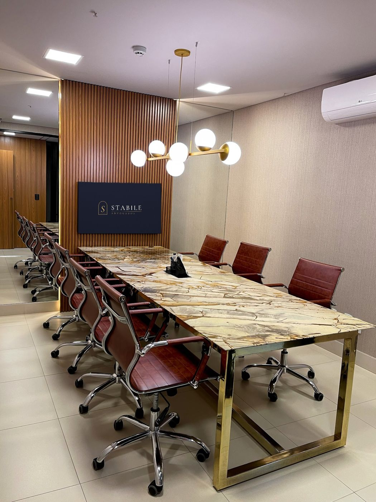
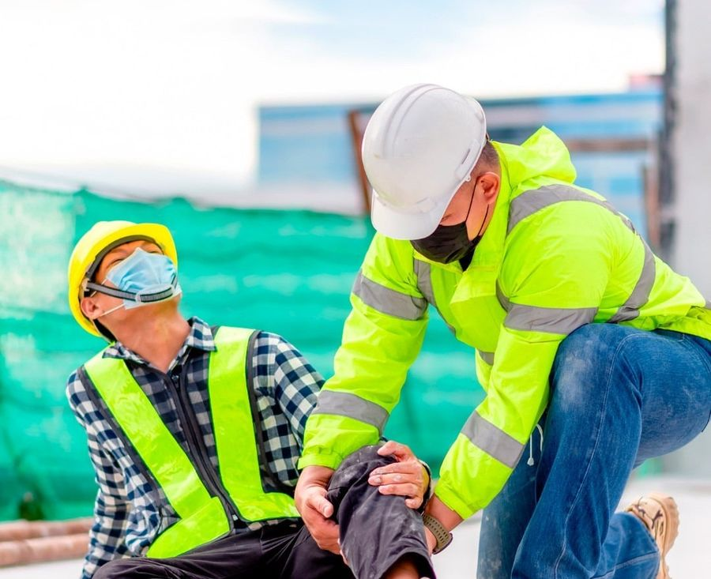
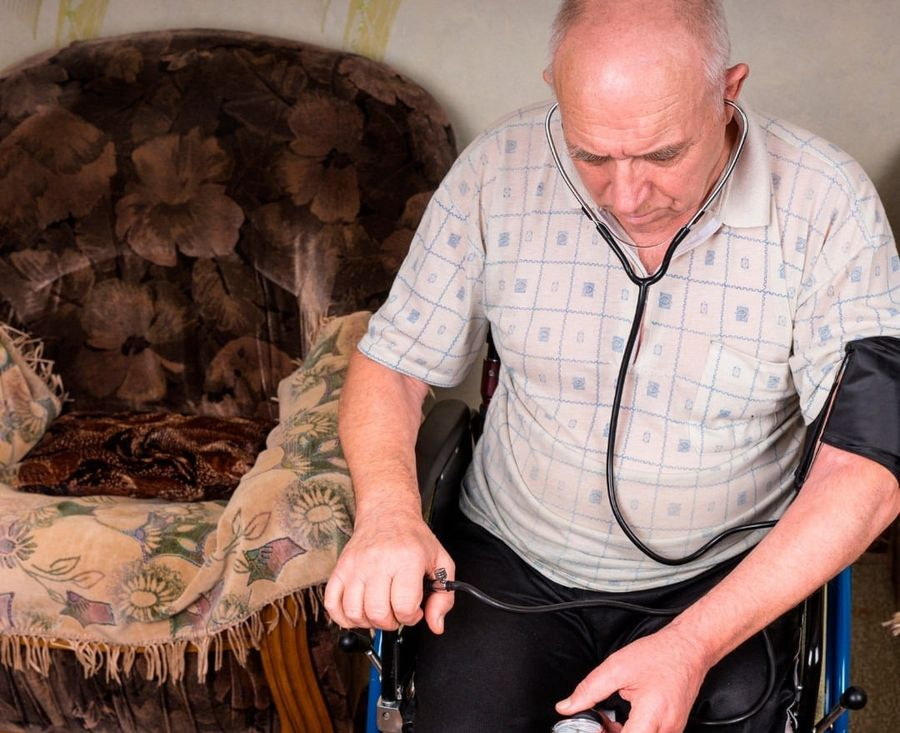

O INSS negou o pedido
A carta chegou com “indeferido” e pouca explicação. Lemos o motivo, vemos qual prova faltou e dizemos se cabe recurso administrativo ou ação judicial, e em que prazo.
Bem-vindo à Stabile Advogados
BPC/LOAS, auxílios e aposentadorias do INSS, com análise dos documentos e acompanhamento até a decisão. Escritório no Jardim Goiás, em Goiânia, e atendimento online em todo o Brasil.
Por onde começar
Você não precisa saber o nome técnico do benefício. Conte o que aconteceu: o enquadramento é com a gente.
A carta chegou com “indeferido” e pouca explicação. Lemos o motivo, vemos qual prova faltou e dizemos se cabe recurso administrativo ou ação judicial, e em que prazo.
Você voltou ao trabalho, mas não com a mesma capacidade. O auxílio-acidente tem natureza indenizatória e pode ser pago junto com o salário. Conferimos laudos e o histórico do caso.
Idoso a partir de 65 anos ou pessoa com deficiência, em família de baixa renda: o BPC/LOAS não exige contribuição ao INSS. Orientamos sobre CadÚnico, laudos e perícia.
Áreas de atuação
Toque no assunto que se parece com o seu caso. A conversa já começa no tema certo.
Benefício assistencial para idosos a partir de 65 anos e pessoas com deficiência de baixa renda.
Falar sobre isso → 02Para quem ficou com sequela que reduz a capacidade de trabalho depois de um acidente.
Falar sobre isso → 03Incapacidade temporária para o trabalho, do pedido à perícia e à prorrogação.
Falar sobre isso → 04Quando a incapacidade é permanente e não há reabilitação possível para outra função.
Falar sobre isso → 05Especial, por idade e por tempo de contribuição: contagem de períodos e conferência do CNIS.
Falar sobre isso → 06Para cônjuge, companheiro e dependentes de quem era segurado do INSS.
Falar sobre isso → 07Para seguradas, inclusive autônomas, desempregadas e trabalhadoras rurais.
Falar sobre isso → 08Demandas do trabalho e da vida civil, muitas vezes ligadas ao mesmo caso previdenciário.
Falar sobre isso →O escritório
Salas 2602 a 2607 do Flamboyant Park Business.



Segunda a sexta
9h às 18h

Quem atende
À frente do escritório desde a fundação, conduz uma equipe de advogados e consultores de atendimento dedicada a benefícios do INSS. Do primeiro contato à decisão, você sabe com quem está falando e em que pé está o seu processo.
Quem já passou por aqui
★★★★★“Quero deixar registrado meu mais sincero agradecimento ao advogado responsável pelo meu caso e toda a equipe da Stabile. Sou extremamente grato pela dedicação, atenção e profissionalismo durante todo o processo. Obrigado pelo suporte, confiança e pela forma humana e respeitosa com que fui tratado. Sem dúvidas, vocês fizeram a diferença.”
Jhonatan Rangel
★★★★★“Excelente atendimento, equipe muito atenciosa, competente e comprometida. Sempre disponível para esclarecer dúvidas e acompanhar cada etapa com transparência. Recomendo os serviços com total confiança.”
Isabela Sena · Google
★★★★★“Prestação de serviço de alta qualidade. Super indico!”
Maria Caroline Roque · Google Ver todas as avaliações no Google →
Como funciona
Pelo WhatsApp, por telefone ou no escritório. A equipe já diz quais documentos separar: carta do INSS, laudos, CNIS e carteira de trabalho.
Um advogado lê a documentação e explica, em linguagem simples, se existe caminho, qual é ele e quanto tempo costuma levar.
Pedido administrativo ou ação judicial, perícia, prazos e recursos. Você recebe notícia a cada etapa, sem precisar correr atrás.
Blog

O Benefício de Prestação Continuada (BPC), também conhecido como Lei Orgânica da Assistência Social (LOAS), é um importante instrumento de proteção…
Ler artigo →
O auxílio-acidente é um benefício previdenciário essencial para quem enfrentou um acidente e sofreu sequelas que impactam sua capacidade de trabalho.…
Ler artigo →
O auxílio-doença é um benefício concedido pelo INSS para trabalhadores que, por motivos de saúde, encontram-se temporariamente incapazes de…
Ler artigo →Dúvidas
Não achou a sua? Mande no WhatsApp, a resposta vem de quem entende do assunto.
Os honorários são apresentados por escrito depois da análise do caso, antes de qualquer contratação, e seguem a tabela da OAB de Goiás. A primeira conversa serve para entender a sua situação.
Sim. O escritório atua em todo o território nacional, e o atendimento pode ser feito inteiro pelo WhatsApp e por videochamada.
Não. O BPC é um benefício assistencial: os requisitos são idade (65 anos ou mais) ou deficiência, e renda familiar baixa, com inscrição no CadÚnico.
A negativa não encerra o assunto. Dependendo do motivo, cabe recurso administrativo ou ação judicial. Como existem prazos, quanto antes a análise, melhor.
Documento com foto, CPF, comprovante de residência, a carta do INSS (se houver), laudos e exames médicos, carteira de trabalho e o extrato do CNIS. Se faltar algo, a equipe ajuda a conseguir.